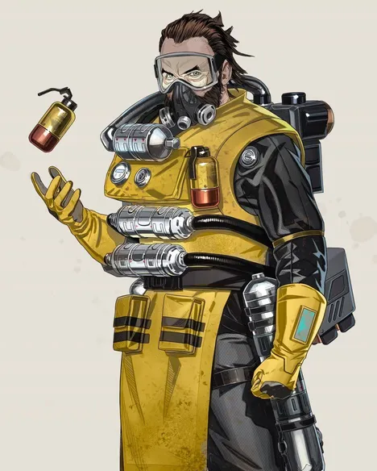
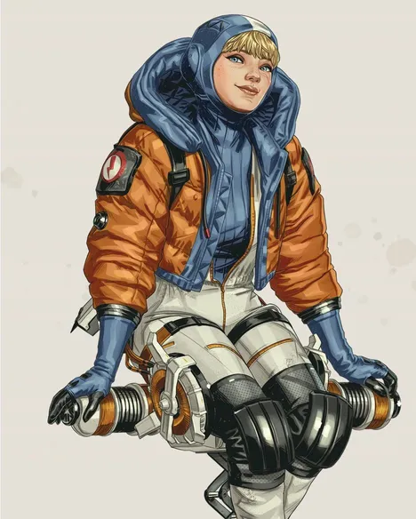
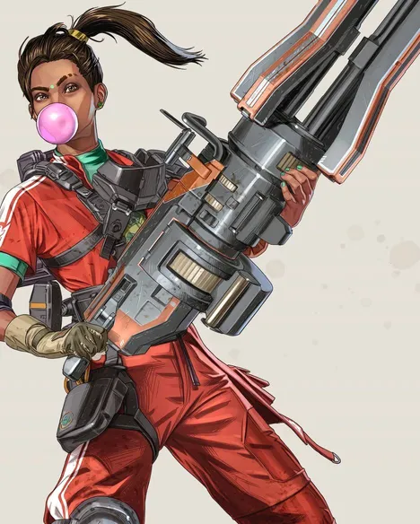
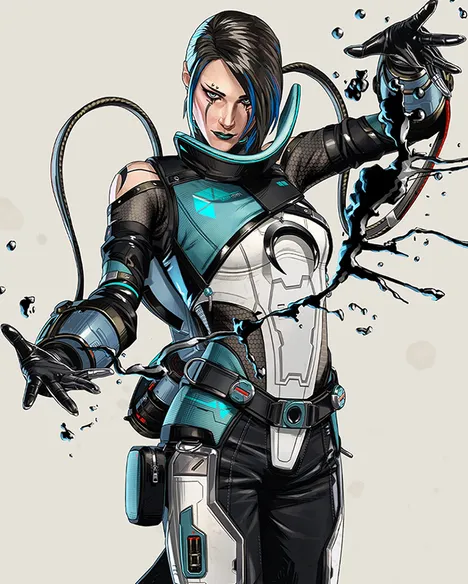

코스틱(Caustic)
- 패시브-요새화 (Fortified)
- 받는 피해가 15% 감소합니다. 총에 맞아도 느려지지 않습니다.
- 패시브-녹스 비전 (Nox Vision)
- 가스 속을 이동하는 적들을 강조 표시합니다.
- 전술-녹스 가스 트랩 (Nox Gas Trap)
- 총에 맞거나 적이 건드리면 치명적인 녹스 가스를 방출하는 용기를 최대 6개 설치합니다.
- 얼티밋 스킬-녹스 가스 수류탄 (Nox Gas Grenade)
- 넓은 지역을 녹스 가스로 뒤덮습니다.

왓슨(Wattson)
- 패시브-천재의 스파크 (Spark of Genius)
- 얼티밋 스킬 촉진제가 왓슨의 얼티밋 스킬을 완전히 충전시키며, 얼티밋 스킬 촉진제를 더 많이 들고 다닐 수 있습니다.
왓슨은 느린 속도로 자신의 실드를 자동 회복합니다.
- 전술-주변 보안 (Perimeter Security)
- 노드를 연결해 전기 펜스를 설치합니다. 펜스는 적에게 대미지를 주고 움직임을 느려지게 합니다.
- 얼티밋 스킬-인터셉션 파일런 (Interception Pylon)
- 전기 파일런을 설치해 날아오는 탄환을 파괴하고 손상된 실드를 복구합니다.
왓슨이 파일런 근처에 있으면 전술 스킬의 충전 속도가 빨라집니다.

램파트(Rampart)
- 패시브-개조 장전기 (Modded Loader)
- LMG와 미니건을 사용할 때 탄창 용량이 증가하고 재장전 속도가 빨라집니다.
- 전술-증폭 엄폐물 (Amped Cover)
- 다리 높이의 엄폐물 방벽을 설치합니다.
방벽은 몸 전체를 보호하는 증폭 방벽을 전개하여 들어오는 탄환을 막고 나가는 탄환을 증폭합니다. [최대: 5]
- 얼티밋 스킬-휴대용 미니건 "쉴라" (Mobile Minigun "Sheila")
- 고용량 탄창이 하나 장착된 휴대형 미니건을 듭니다.
설치하면 장전 가능한 고정형 터릿으로 모두가 사용할 수 있습니다. [최대: 3]

카탈리스트(Catalyst)
- 패시브-바리케이트(Barricade)
- [X] 버튼을 홀드해 적이 문을 이용할 수 없도록 리인포스하여 강화합니다.
문이 파괴된 장소 또한 리인포스할 수 있습니다. [최대: 2]
- 전술-피어싱 스파이크(Piercing Spikes)
- 적이 가까이 있으면 스파이크로 변하는 페로플루이드 패치를 투척합니다. 카탈리스트는 적의 가시에 면역입니다. [최대: 3]
- 얼티밋 스킬-다크 베일(Dark Veil)
- 투과성 페로플루이드 벽을 세웁니다. 벽을 지나가는 적은 짧은 시간 동안 느려지고 시야가 일부 가려집니다.
